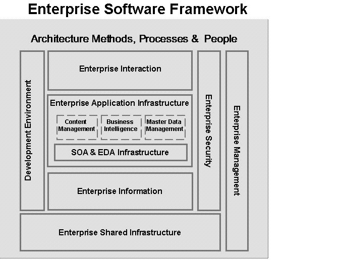
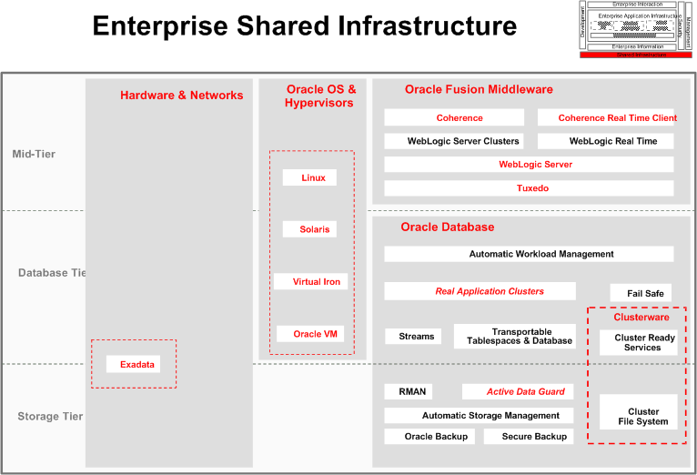
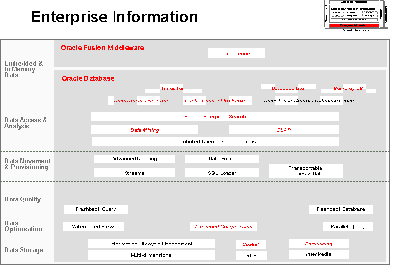
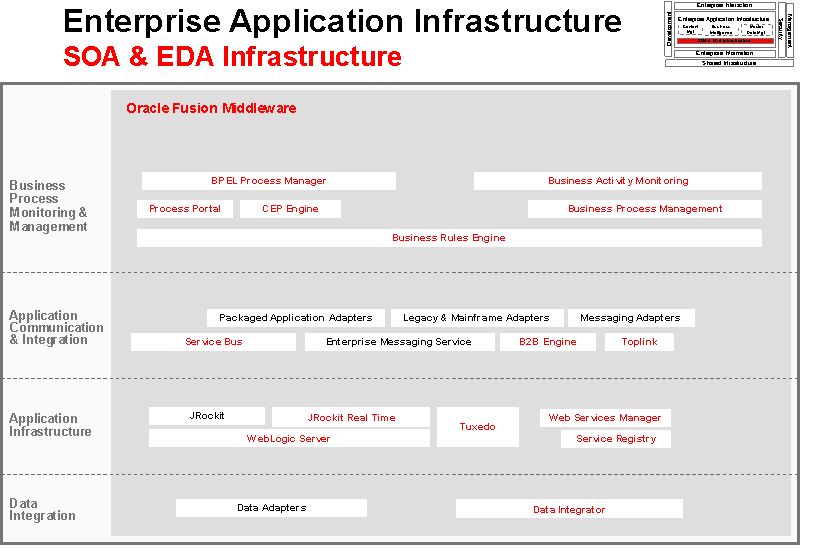

The Enterprise Software Framework (ESF) is a framework developed by Oracle. The purpose of ESF is to:
Define a generic enterprise software architecture that is capable of meeting the system needs of a modern Enterprise.
Provide a standard framework for mapping Oracle technology products, options and differentiating product features in order to:
Position them in relation to each other in an architectural context for customers and partners.
Perform an architectural impact analysis when technology products are acquired by Oracle.
Perform competitive analysis of competitive offerings.
Illustrate the key architectural capabilities they enable.
Define Oracle-based enterprise solutions using Oracle products and options to support technology cross-selling and industry solution led selling.
Explain Oracle products to customers and partners in an architectural context.

The figure above illustrates the ESF concepts. It is important to understand that ESF is not a software architecture, there are no dependencies or relationships. ESF is a framework for software classification.
ESF is a generic software breakdown structure. The framework represents the core functionality needed for building enterprise-wide solutions. Physical infrastructure is not included in ESF. ESF can be mapped to commonly used Industry Frameworks. It can be applied to both Oracle and third party technology products. The result of using ESF is a diagram that becomes a Bill of Materials for architectural capabilities and technology solutions.
ESF uses specific notation to indicate software classifications. For each of the blocks in ESF concepts figure above, there is an ESF diagram that classifies software using the ESF Framework. The notation used is illustrated in the following diagram. The examples (names of software) in the following figure are just examples to illustrate how ESF notation is used.
WHAT ARE SOME EXAMPLES OF ESF WITH ORACLE PRODUCTS?
ESF is updated frequently as Oracle products change names, are retired, or are acquired. The following examples are provided to give more meaning to ESF in the context of Oracle software.
Enterprise Shared Infrastructure
Software in the Enterprise Shared Infrastructure classification is focused on:
return on investment (ROI)
pool and share resources
eliminate inherent redundancy in Silo infrastructure
minimizing the total cost of ownership (TCO)
buy as you grow
avoid unnecessary maintenance costs
reduced complexity
task automation
delivering on service-level agreements
no single point of failure
minimum/zero planned downtime
respond immediately to unpredictable workloads
rapid application deployment

EXAMPLE of ESF - Enterprise Shared Infrastructure Diagram
Enterprise Information
Software in the Enterprise Information classification is focused on:
fully exploiting corporate information assets
all data accessible online
3rd party data integration/federation
secure Enterprise Search
enhancing data quality
common information representation
data consolidation
centralized data management
providing current accurate information
automated data provisioning
materialized views
low latency, high performance

EXAMPLE of ESF - Enterprise Information
SOA and EDA: Enterprise Application Infrastructure
Software in the Service Oriented Event Driven Architecture - Enterprise Application Infrastructure classification is focused on:
intra- and inter-enterprise common processes
providing Standardized application integration
sharing of standardized business rules, information and process
respond to rapid change
faster development and deployment
easier maintenance
dynamically configurable rules and business processes
composite applications
enable business innovation
facilitate development of new products and services
increased collaboration
streamline business processes

EXAMPLE of ESF - Service Oriented Event Driven Architecture: Enterprise Application Infrastructure